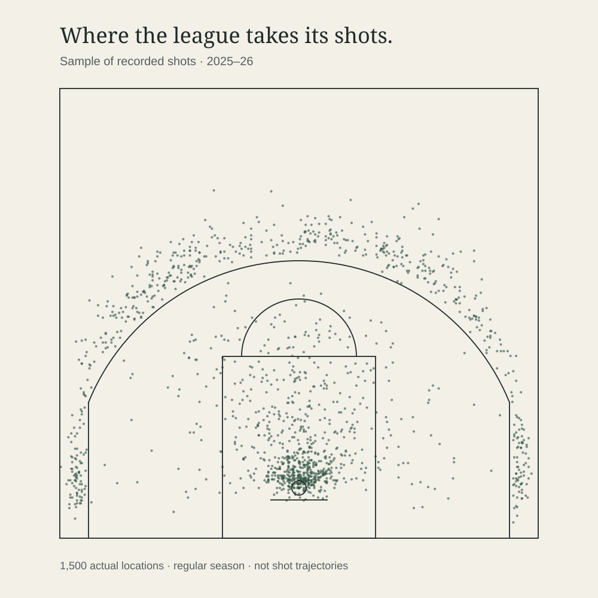
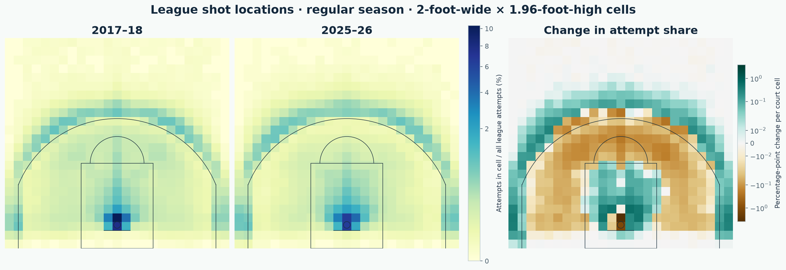

From recorded shots
to a pattern.
A dot is one recorded attempt. Group the locations, compare two seasons, and see how the league’s choices changed.
2025–26 · 1,500 sampled locations

With JavaScript enabled, choose a season, switch views, or select a shot area. The complete comparison is also available below.
The interactive map could not load. The original dot map and complete table remain available.
Midrange
- 2017–18
- 19.05%40,336 attempts
- 2025–26
- 10.00%21,945 attempts
Down 9.06 percentage points
Share of all eligible regular-season attempts. This measures where shots were taken—not shooting success or prediction accuracy.
Full zone comparison and sources
| Shot area | 2017–18 | 2025–26 |
|---|---|---|
| Rim | 31.59% | 28.28% |
| Other paint | 15.70% | 19.92% |
| Midrange | 19.05% | 10.00% |
| Corner 3 | 7.37% | 10.70% |
| Above-break 3 | 26.04% | 30.59% |
| Backcourt | 0.25% | 0.01% |
| Unlocated heave | 0.00% | 0.50% |
| Unknown | 0.00% | 0.00% |
The denominators are 211,707 attempts in 2017–18 and 219,553 in 2025–26. The dot view samples 1,500 actual half-court locations from each season; no dots are invented. The area view groups the complete mapped cohort into a 25 × 24 grid. Circle area represents cell share, with a common scale across both seasons.
Attempts without valid half-court coordinates remain in the denominator, but are never placed on the court. That includes 1,090 unlocated team-only heaves in 2025–26. The source’s quality screens and shot-area labels are preserved. Displayed percentages are rounded to two decimals.
See the original research figure

Where the league takes its shots
Scroll sideways to compare both courts and their shared scale.
These percentages describe shot distribution, not shooting success or prediction accuracy. View the complete original figure ↗
From shot selection to win probabilities
The project combines public play-by-play archives with team, player, schedule, and travel context to explore league-wide patterns. It examines how shot selection changed across nine seasons, then models win probabilities before tip-off, after three quarters, and as a game's events unfold.
Training and validation follow the calendar, and historical features use information available before each prediction. The study compares simpler statistical models with AutoML, Bayesian, and sequence-model alternatives, with saved forecasts available in an interactive historical game replay.
Built from the Celtics analysis
I used my original Boston Celtics Player Analysis as the starting point, expanding the study from one team to all 30 NBA teams. The new project revisits the original classifiers and develops a broader workflow for league-wide analysis and probability modeling.